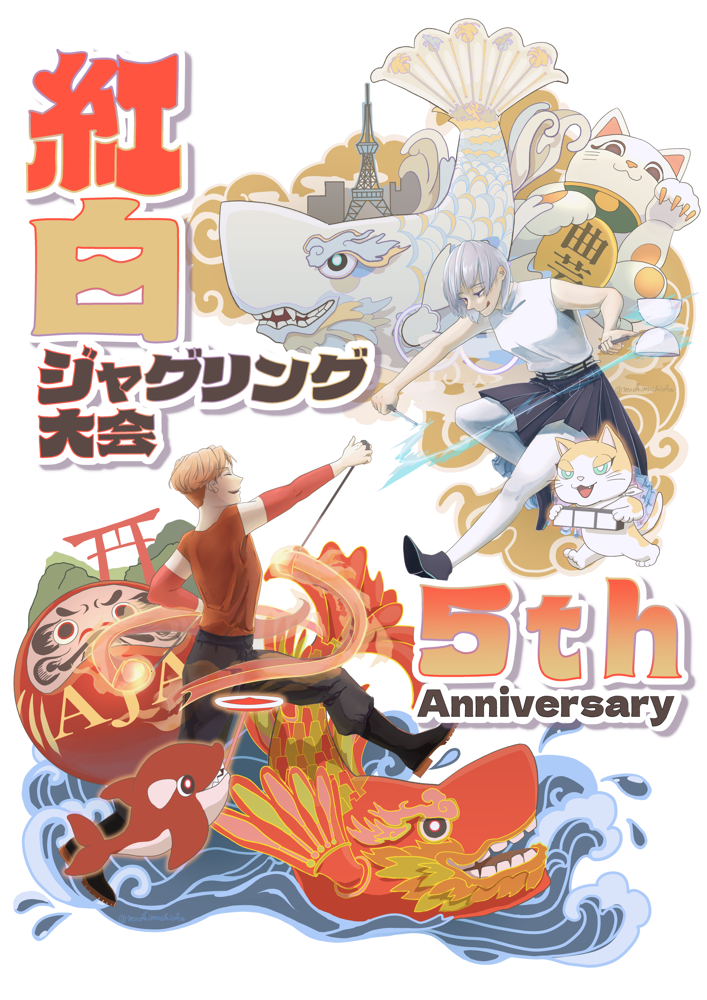

| 大会名 | 第5回紅白ジャグリング大会 |
|---|---|
| 日程 | 2026/12/12 (土) - 13 (日) |
| 会場 | 愛知県名古屋市 南文化小劇場 ホール 名古屋市南区千竈通2丁目10番地の2 |
| 観覧 | 全席自由席・事前予約不要・入場無料 会場でカンパを募集しております。 |
紅組と白組、チームで競い合うジャグリング大会
紅白ジャグリング大会は、従来のジャグリングの大会とは異なり、出場者が紅組と
出場者は、チームの勝利を目指して、日頃の練習の成果を披露していただきます。
そして、勝敗を決めるのは、会場の皆様の「観客投票」です。
第5回となる今回も、皆様に楽しんでいただける大会を目指して企画・運営してまいります。皆様のご出場・ご来場を心よりお待ちしております。